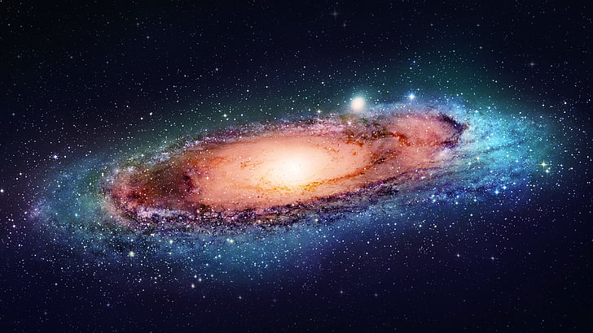
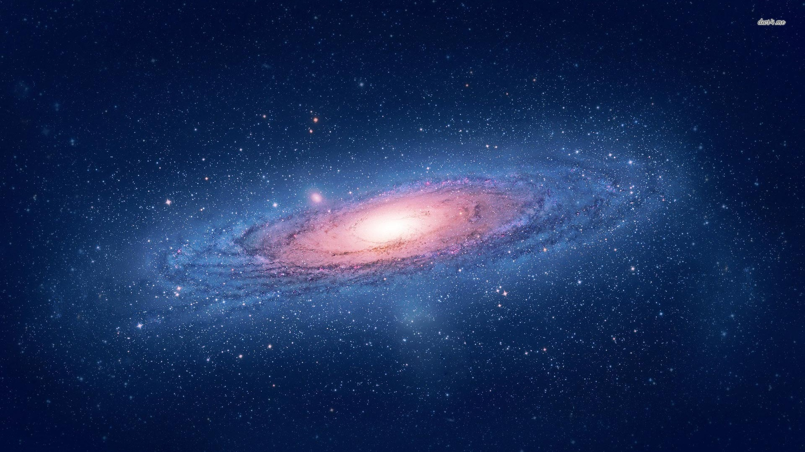
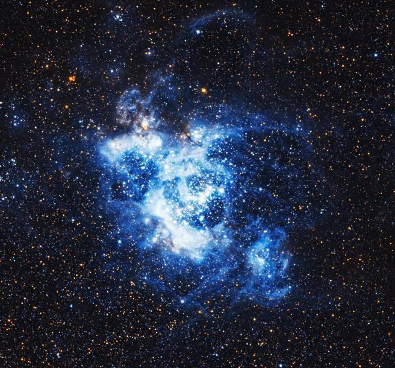

Via Lactea
La Via Láctea és una galaxia grande, espiral y puede tener unos 300.000 millones
de estrellas, entre ellas, el Sol. En total mide unos 100.000 años luz de diámetro
y tiene una masa de más de dos billones de veces la del Sol.

Andromeda
La famosa Galaxia de Andrómeda, conocida como M31 o NGC 224, es una galaxia
espiral gigante, la más cercana a nosotros y visible a simple vista, a pesar
de que está a 2,5 millones de años luz de la Tierra.

Galaxia M33
Es una de nuestras galaxias vecinas, ubicada a tres millones de años luz de la
Vía Láctea, y en sus entrañas alberga unos 25 millones de estrellas. Es uno de los
objetos más lejanos visibles a simple vista desde la Tierra.